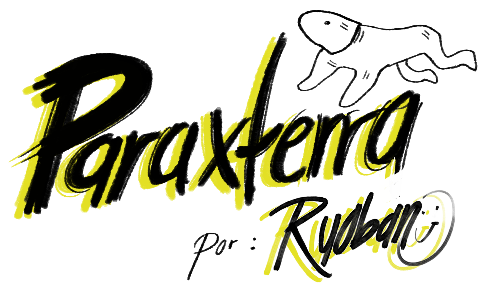
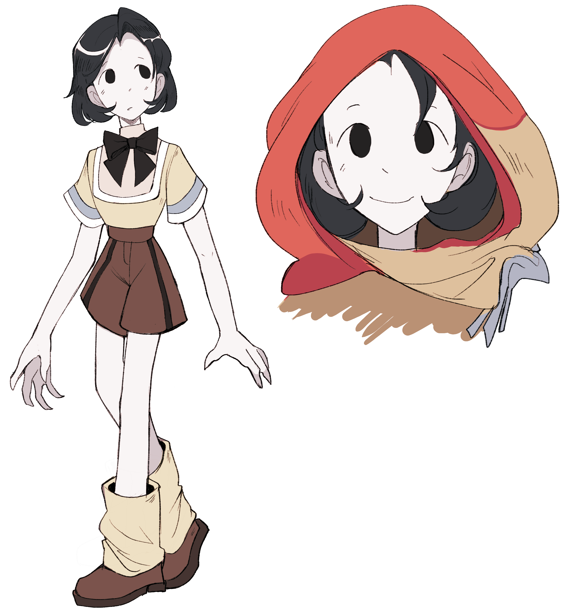
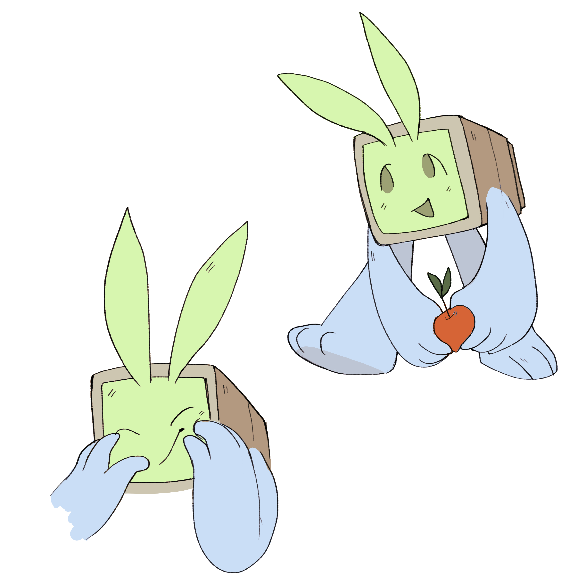
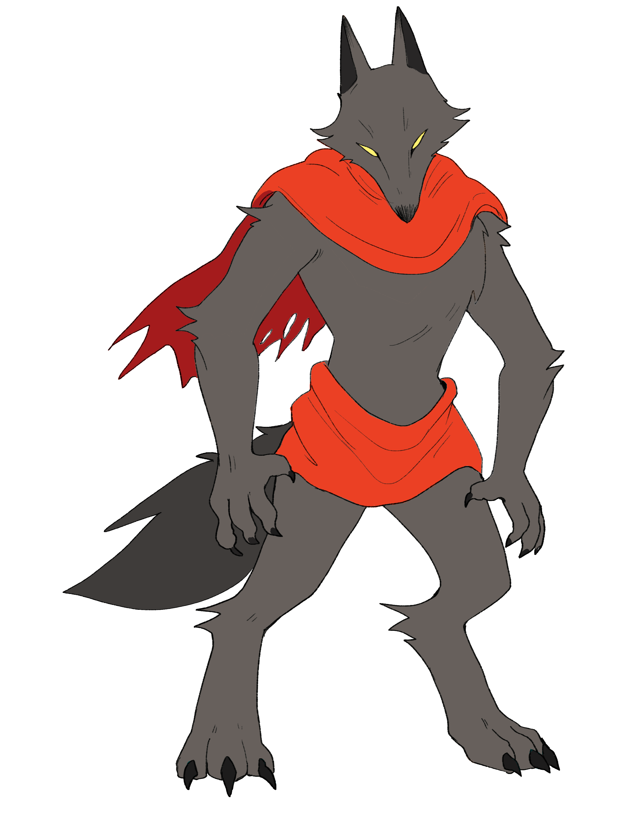
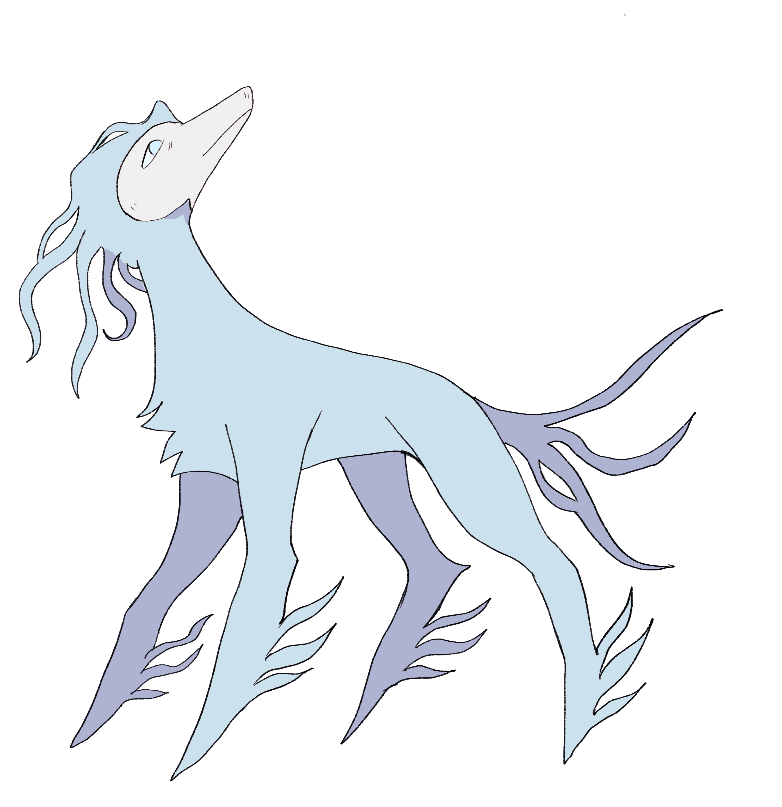

REF_ID: PX-2026
PARAXTERRA
PRÓLOGO

Paraxterra es una historia onírica de exploración y aventura en un mundo donde el sol se detuvo hace milenios. En medio de estos días eternos, Adeline, una joven yatarkiana, y su compañero Albert, emprenden una travesía para encontrar nuevamente a la luna y devolverla a su origen.
ADELINE

De naturaleza tímida y asustadiza, Adeline nació como la más pequeña de su grupo.
Su piel, de un blanco inmaculado, delata su fragilidad ante el mundo hirviente de Paraxterra.
Ella se dedica a tallar grabados en viejas tablas de madera para imprimirlos en cuero de arena;
aunque intenta vivir de su arte, parece ser que ultimamente no le ha ido bien. A pesar de su juventud, habita en una
solitaria choza de paja, sobreviviendo gracias a un huerto que ella misma cultiva.
En el fondo,
Adeline se siente como una mancha pálida perdida en una comunidad de colores vibrantes, hasta que
una extraña criatura llamada verdosa (Albert) aparece para devorar su huerto y cambiar su destino por completo.
ALBERT

Albert es una rareza absoluta en Paraxterra. Durante años vagó por los territorios de Yatarka sin nombre,
dedicándose a robar comida y causar molestias sin una pizca de malicia. Su vida cambió al descubrir la existencia de la Luna
en libros antiguos; desde ese momento, se impuso la misión de encontrarla. A pesar de ser, literalmente,
un extraño cubo con patas, él se percibe a sí mismo como un honorable caballero de alto rango y suele
decir cosas que desconciertan a cualquiera.
Su destino se cruzó con el de Adeline cuando irrumpió en su huerto para darse un festín, ignorando por completo que la chica pálida que lo amenazaba con un palo terminaría
siendo su compañera de viaje.
WOLFHEAD

¿Un Yatarka? ¿Un animal ancestral? ¿O un monstruo? La comunidad la ha nombrado como Wolfhead, una presencia tan esquiva que muchos dudan de su existencia. Se cree que es la última bestia que la Luna dejó atrás antes de que la oscuridad fuera erradicada del mundo. Con sus imponentes tres metros de altura, se oculta en las profundidades del Territorio de Fauna. Nadie conoce sus verdaderas intenciones, pero mientras Adeline y Albert buscan la luna, esta criatura ha comenzado a seguirlos de cerca, mostrando un interés silencioso que nadie sabe explicar.
PWOA

Pwoa es el alma protectora de Fauna. A pesar de vivir bajo la sombra abusiva de su hermano P'danjo, el líder del territorio, ella dedica su vida a cuidar de sus amigos más cercanos.
Relegada por años a trabajos humillantes y de poco valor, Pwoa ha encontrado su libertad en la velocidad,
amando el rastro del viento en su rostro mientras recorre los parajes áridos.
Fue en uno de sus momentos
de escape cuando divisó a dos figuras singulares: un encuentro histórico, pues hace centenares de años que
los habitantes de Fauna y los de Yatarka no cruzaban sus caminos.